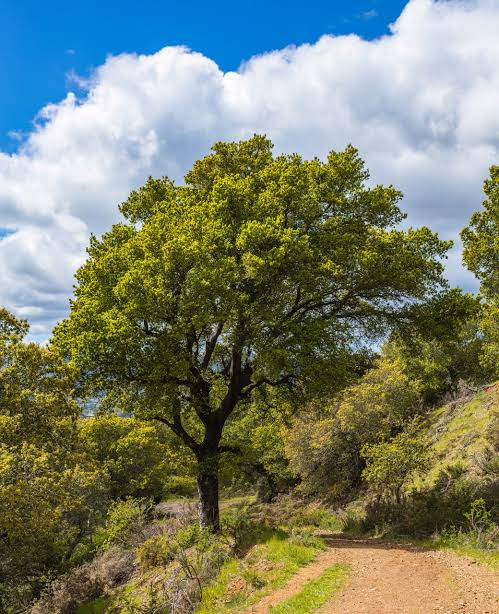
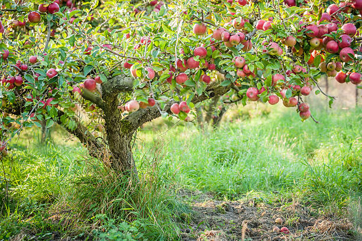

Name: Jonathan Luna
Due Date: 10/6/2026
Trees are highly important in our world. They provide oxygen for us to breathe but additionally provide shade and shelter. Trees are naturally a vital part of our ecosystem. Without them, life as we know it would not be possible because we wouldn't have any oxygen at all. They have a calming effect on people and can help reduce stress levels, though this is generally true for general vegetation/greenery. Additionally, trees are used for many purposes, most notably for paper.
Care for our trees!: It's is vital that we take care of our trees and ensure that they continue to thrive for our future generations.
Oak Tree:

Apple Tree:
